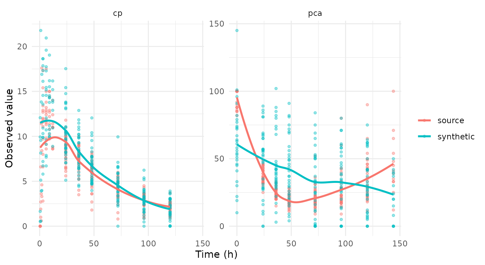

Fit a population model to a study, look at what the fit carries, and generate a synthetic dataset by simulating from it. No number a patient measured reaches the output: what leaves the source is a structural model, a handful of fixed effects, a covariance matrix, a residual error, and a dosing and visit model per arm.
It makes no formal privacy claim, and it is not for
estimation — the fitted parameters exist to make simulated
profiles look like the source study, and the object prints that warning
with itself. The full specification is in
vignette("pmxmodel-algorithm").
The study
nlmixr2data::warfarin is thirty-two patients given a
single oral dose, with a concentration endpoint cp and a
pharmacodynamic one pca.
data("warfarin", package = "nlmixr2data")
warfarin <- as.data.frame(warfarin)
str(warfarin)
#> 'data.frame': 515 obs. of 9 variables:
#> $ id : int 1 1 1 1 1 1 1 1 1 1 ...
#> $ time: num 0 0.5 1 2 3 6 9 12 24 24 ...
#> $ amt : num 100 0 0 0 0 0 0 0 0 0 ...
#> $ dv : num 0 0 1.9 3.3 6.6 9.1 10.8 8.6 5.6 44 ...
#> $ dvid: Factor w/ 2 levels "cp","pca": 1 1 1 1 1 1 1 1 1 2 ...
#> $ evid: int 1 0 0 0 0 0 0 0 0 0 ...
#> $ wt : num 66.7 66.7 66.7 66.7 66.7 66.7 66.7 66.7 66.7 66.7 ...
#> $ age : int 50 50 50 50 50 50 50 50 50 50 ...
#> $ sex : Factor w/ 2 levels "female","male": 2 2 2 2 2 2 2 2 2 2 ...Its sixteen recorded observation times are the protocol’s, shared
across patients, so declaring nominal_time from
time asserts something true about this study rather than
constructing a grid. A study whose recorded times are per-patient clock
readings needs a grid built by hand first; the public-data survey for
synpmx_pca() works several of those.
sort(unique(warfarin$time[warfarin$evid == 0]))
#> [1] 0.0 0.5 1.0 1.5 2.0 3.0 6.0 9.0 12.0 24.0 36.0 48.0
#> [13] 72.0 96.0 120.0 144.0
warfarin$ntime <- warfarin$time
warfarin_roles <- pmx_roles(
id = "id", time = "time", nominal_time = "ntime", dv = "dv", amt = "amt",
evid = "evid", dvid = "dvid", covariates = c("wt", "age", "sex")
)Fitting
synpmx_model_estimate() is the only stage that reads
patient data, and the only one that needs nlmixr2. It works
out which endpoint is the drug, what design produced it, fits the
candidates that design admits and picks one on AIC.
fit <- synpmx_model_estimate(warfarin, warfarin_roles, seed = 1)That is one population fit: a one-compartment oral model with
allometric scaling on wt, chosen by the route detection
rather than by a search. Ask for more where you want it —
pk = "2cmt_oral", or
pk = c("1cmt_oral", "2cmt_oral") to compare the two on
AIC.
The chunk above is shown rather than run. Fitting compiles a model,
so this document reads a stored fit built by
scripts/build-model-fits.R and R CMD check
never needs a compiler.
fit
#> A fitted PMX model, from synpmx_model_estimate()
#>
#> fitted on 32 patients, 1 arm(s)
#> structural 1cmt_oral (chosen from 1 candidate(s) on AIC)
#> fixed cl 0.1361, v 7.802, ka 0.562
#> random on cl, v, ka
#> pk endpoint cp
#>
#> These parameters are not estimates to report. They exist to make
#> simulated profiles resemble the source study; the candidate set is too
#> small and the covariate model too thin for any of them to answer a
#> scientific question.Clearance of 0.136 L/h and a volume of 7.8 L are the values this dataset is known for, which is the point: the fit is good enough to simulate from. It is still not a result to report, for the reason the object prints.
What the fit carries
Two halves. model_report() separates them, because they
answer to different things — one half is an estimate with all an
estimate’s caveats, the other is a summary of the study’s apparatus.
model_report(fit)
#> What this fitted model carries
#>
#> Estimated by nlmixr2
#> structural model 1cmt_oral
#> fixed effects cl 0.1361, v 7.802, ka 0.562
#> between-subject cl 0.252, v 0.14, ka 0.638 (as SD on the log scale)
#> residual error additive 1.07
#> covariate effects cl ~ (wt/70)^0.75, v ~ (wt/70)^1.00
#> pd shapes pca: linear
#>
#> Summarized from the source, not estimated
#> cohort 32 patients in 1 arm(s)
#> visit model 22 grid cells over 2 endpoint(s)
#> dosing model 1 planned cycle(s) per arm | no reductions, skips or early stops
#>
#> How the concentration endpoint was decided
#> endpoint cp (inferred)
#> endpoint compartment post_dose shape proportional
#> cp NA TRUE TRUE NA
#> pca NA TRUE FALSE NA
#> design the median profile rises to a peak at 9 before declining, and 31% of subjects do too
#>
#> Covariate against the individual random effects
#> covariate parameter correlation
#> age ka -0.260
#> sex v -0.225
#> age cl 0.160
#> sex ka -0.095
#> wt cl -0.078
#>
#> A covariate that moves with a random effect and is not in the model above
#> is generated independently of the profiles, so the synthetic data carries
#> no relationship between them. `synpmx_avatar()` keeps those relationships
#> without modelling them.The signals table says how the concentration endpoint was decided.
Here cp is the only endpoint with a rise-and-fall shape,
and proportional reads “not computable” because
warfarin gives every patient the same dose — there are no
dose levels to compare. That is the classification telling you how much
it had to go on, and it is worth reading before trusting the answer.
The correlation block is the other thing to read. A covariate that
moves with a random effect and is not in the model above is generated
independently of the profiles, so the synthetic data carries no
relationship between them. synpmx_avatar() keeps those
relationships without modelling them.
The candidates
show(model_candidates(fit), "Candidates the design admitted")One row, because the default fits one model and stops. A distribution
phase is a refinement of a shape the one-compartment model already has
and costs about five times as long to fit, so it is available rather
than routine: pk = "2cmt_oral" forces it,
pk = c("1cmt_oral", "2cmt_oral") fits both and picks on
AIC, and model_report() says when the sampling would
support one.
The whole call takes about eleven seconds on a study this size, and effectively all of it is this one fit — the PD shapes are least squares and cost nothing measurable.
Generating
synpmx_model_generate() reads no patient data. Its
arguments are the fit and a subject count, so everything about the
source that reaches the output has already passed through the fit.
synthetic <- synpmx_model_generate(fit, n_subjects = 32, seed = 7)
str(synthetic)
#> 'data.frame': 513 obs. of 10 variables:
#> $ id : int 34 34 34 34 34 34 34 34 34 34 ...
#> $ time : num 0 0 3 9 24 24 36 36 48 48 ...
#> $ ntime: num 0 0 3 9 24 24 36 36 48 48 ...
#> $ dv : num NA 58 18.6 15.5 13.8 ...
#> $ amt : num 120 0 0 0 0 0 0 0 0 0 ...
#> $ evid : int 1 0 0 0 0 0 0 0 0 0 ...
#> $ dvid : chr NA "pca" "cp" "cp" ...
#> $ wt : num 52.1 52.1 52.1 52.1 52.1 ...
#> $ age : int 33 33 33 33 33 33 33 33 33 33 ...
#> $ sex : Factor w/ 2 levels "female","male": 2 2 2 2 2 2 2 2 2 2 ...
#> - attr(*, "pmx_fitted_model")=List of 18
#> ..$ structural : chr "1cmt_oral"
#> ..$ candidates :'data.frame': 1 obs. of 4 variables:
#> .. ..$ model : chr "1cmt_oral"
#> .. ..$ converged: logi TRUE
#> .. ..$ aic : num 887
#> .. ..$ note : chr ""
#> ..$ parameters :List of 3
#> .. ..$ fixed : Named num [1:3] 0.136 7.802 0.562
#> .. .. ..- attr(*, "names")= chr [1:3] "cl" "v" "ka"
#> .. ..$ omega : num [1:3, 1:3] 0.0638 0 0 0 0.0197 ...
#> .. .. ..- attr(*, "dimnames")=List of 2
#> .. .. .. ..$ : chr [1:3] "cl" "v" "ka"
#> .. .. .. ..$ : chr [1:3] "cl" "v" "ka"
#> .. ..$ residual:List of 2
#> .. .. ..$ kind: chr "additive"
#> .. .. ..$ sd : num 1.07
#> ..$ endpoints :List of 5
#> .. ..$ pk : chr "cp"
#> .. ..$ pd : chr "pca"
#> .. ..$ discrete : chr(0)
#> .. ..$ signals :'data.frame': 2 obs. of 5 variables:
#> .. .. ..$ endpoint : chr [1:2] "cp" "pca"
#> .. .. ..$ compartment : logi [1:2] NA NA
#> .. .. ..$ post_dose : logi [1:2] TRUE TRUE
#> .. .. ..$ shape : logi [1:2] TRUE FALSE
#> .. .. ..$ proportional: logi [1:2] NA NA
#> .. ..$ decided_by: chr "inferred"
#> ..$ arms :List of 2
#> .. ..$ arms : chr "all"
#> .. ..$ sizes: Named int 32
#> .. .. ..- attr(*, "names")= chr "all"
#> ..$ dosing :List of 1
#> .. ..$ all:List of 8
#> .. .. ..$ planned :'data.frame': 1 obs. of 3 variables:
#> .. .. .. ..$ cycle: int 1
#> .. .. .. ..$ time : num 0
#> .. .. .. ..$ amt : num 120
#> .. .. ..$ levels : num 1
#> .. .. ..$ discontinuation: num 0
#> .. .. ..$ interruption : num 0
#> .. .. ..$ reduction : num 0
#> .. .. ..$ patients : int 32
#> .. .. ..$ distinct : int 20
#> .. .. ..$ source_doses : num 1
#> ..$ visits :List of 1
#> .. ..$ all:List of 2
#> .. .. ..$ cells : Named int [1:22] 1 2 3 4 5 6 7 8 9 10 ...
#> .. .. .. ..- attr(*, "names")= chr [1:22] "cp@0.5" "cp@1" "cp@1.5" "cp@2" ...
#> .. .. ..$ probability: Named num [1:22] 0.125 0.125 0.0938 0.1562 0.375 ...
#> .. .. .. ..- attr(*, "names")= chr [1:22] "cp@0.5" "cp@1" "cp@1.5" "cp@2" ...
#> ..$ schema :List of 11
#> .. ..$ censoring :List of 2
#> .. .. ..$ cp : NULL
#> .. .. ..$ pca: NULL
#> .. ..$ columns : chr [1:10] "id" "time" "ntime" "dv" ...
#> .. ..$ prototypes :List of 10
#> .. .. ..$ id : int(0)
#> .. .. ..$ time : num(0)
#> .. .. ..$ ntime: num(0)
#> .. .. ..$ dv : num(0)
#> .. .. ..$ amt : num(0)
#> .. .. ..$ evid : int(0)
#> .. .. ..$ dvid : Factor w/ 2 levels "cp","pca":
#> .. .. ..$ wt : num(0)
#> .. .. ..$ age : int(0)
#> .. .. ..$ sex : Factor w/ 2 levels "female","male":
#> .. ..$ id_class : chr "integer"
#> .. ..$ id_offset : int 33
#> .. ..$ id_levels : NULL
#> .. ..$ cmt_dose : NULL
#> .. ..$ cmt_obs :List of 2
#> .. .. ..$ cp : NULL
#> .. .. ..$ pca: NULL
#> .. ..$ carried : NULL
#> .. ..$ arm_values :List of 1
#> .. .. ..$ all: list()
#> .. ..$ endpoint_specs:List of 2
#> .. .. ..$ cp :List of 5
#> .. .. .. ..$ type : chr "continuous"
#> .. .. .. ..$ levels : NULL
#> .. .. .. ..$ nonnegative: logi FALSE
#> .. .. .. ..$ reason : chr "not every observed value is a whole number"
#> .. .. .. ..$ declared : logi FALSE
#> .. .. ..$ pca:List of 5
#> .. .. .. ..$ type : chr "integer"
#> .. .. .. ..$ levels : NULL
#> .. .. .. ..$ nonnegative: logi TRUE
#> .. .. .. ..$ reason : chr "53 whole-number levels, from 9 to 100"
#> .. .. .. ..$ declared : logi FALSE
#> ..$ roles :List of 19
#> .. ..$ id : chr "id"
#> .. ..$ time : chr "time"
#> .. ..$ nominal_time : chr "ntime"
#> .. ..$ tad : NULL
#> .. ..$ occasion : NULL
#> .. ..$ dv : chr "dv"
#> .. ..$ amt : chr "amt"
#> .. ..$ evid : chr "evid"
#> .. ..$ cmt : NULL
#> .. ..$ dvid : chr "dvid"
#> .. ..$ mdv : NULL
#> .. ..$ rate : NULL
#> .. ..$ cens : NULL
#> .. ..$ limit : NULL
#> .. ..$ addl : NULL
#> .. ..$ ii : NULL
#> .. ..$ assigned_dose : NULL
#> .. ..$ dose_covariate: NULL
#> .. ..$ covariates : chr [1:3] "wt" "age" "sex"
#> .. ..- attr(*, "class")= chr "pmx_roles"
#> ..$ settings :List of 6
#> .. ..$ min_subjects : int 20
#> .. ..$ min_arm_patients : int 3
#> .. ..$ min_time_bins : int 6
#> .. ..$ estimation : chr "focei"
#> .. ..$ covariate_effects: chr "auto"
#> .. ..$ error : chr "add"
#> ..$ n_source : int 32
#> ..$ cells :'data.frame': 22 obs. of 4 variables:
#> .. ..$ index : int [1:22] 1 2 3 4 5 6 7 8 9 10 ...
#> .. ..$ name : chr [1:22] "cp@0.5" "cp@1" "cp@1.5" "cp@2" ...
#> .. ..$ endpoint: chr [1:22] "cp" "cp" "cp" "cp" ...
#> .. ..$ time : num [1:22] 0.5 1 1.5 2 3 6 9 12 24 36 ...
#> ..$ pd :List of 1
#> .. ..$ pca:List of 6
#> .. .. ..$ pd : chr "linear"
#> .. .. ..$ typical : Named num [1:2] 52.23 -0.24
#> .. .. .. ..- attr(*, "names")= chr [1:2] "baseline" "slope"
#> .. .. ..$ aic : num 2137
#> .. .. ..$ baseline_cv: num 0.227
#> .. .. ..$ residual :List of 2
#> .. .. .. ..$ kind: chr "additive"
#> .. .. .. ..$ sd : num 24
#> .. .. ..$ candidates :'data.frame': 2 obs. of 2 variables:
#> .. .. .. ..$ shape: chr [1:2] "constant" "linear"
#> .. .. .. ..$ aic : num [1:2] 2174 2137
#> ..$ covariate_effects:List of 2
#> .. ..$ cl:List of 3
#> .. .. ..$ covariate: chr "wt"
#> .. .. ..$ reference: num 70
#> .. .. ..$ exponent : num 0.75
#> .. ..$ v :List of 3
#> .. .. ..$ covariate: chr "wt"
#> .. .. ..$ reference: num 70
#> .. .. ..$ exponent : num 1
#> ..$ covariates :List of 1
#> .. ..$ all:List of 3
#> .. .. ..$ wt :List of 4
#> .. .. .. ..$ kind : chr "lognormal"
#> .. .. .. ..$ meanlog: num 4.23
#> .. .. .. ..$ sdlog : num 0.19
#> .. .. .. ..$ median : num 71.7
#> .. .. ..$ age:List of 4
#> .. .. .. ..$ kind : chr "lognormal"
#> .. .. .. ..$ meanlog: num 3.39
#> .. .. .. ..$ sdlog : num 0.304
#> .. .. .. ..$ median : num 27.5
#> .. .. ..$ sex:List of 3
#> .. .. .. ..$ kind : chr "categorical"
#> .. .. .. ..$ levels : chr [1:2] "female" "male"
#> .. .. .. ..$ probability: num [1:2] 0.156 0.844
#> ..$ discrete :List of 1
#> .. ..$ all:List of 22
#> .. .. ..$ :List of 2
#> .. .. .. ..$ levels : num 0
#> .. .. .. ..$ probability: num 1
#> .. .. ..$ :List of 2
#> .. .. .. ..$ levels : num [1:4] 1 1.9 2.7 6.6
#> .. .. .. ..$ probability: num [1:4] 0.25 0.25 0.25 0.25
#> .. .. ..$ :List of 2
#> .. .. .. ..$ levels : num [1:3] 0.6 11.4 3.6
#> .. .. .. ..$ probability: num [1:3] 0.333 0.333 0.333
#> .. .. ..$ :List of 2
#> .. .. .. ..$ levels : num [1:5] 11.6 17.6 3.3 4.6 8.4
#> .. .. .. ..$ probability: num [1:5] 0.2 0.2 0.2 0.2 0.2
#> .. .. ..$ :List of 2
#> .. .. .. ..$ levels : num [1:13] 11.1 11.6 11.9 12 12.7 12.9 13.4 15.4 17.3 2.8 ...
#> .. .. .. ..$ probability: num [1:13] 0.0769 0.0769 0.0769 0.0769 0.0769 ...
#> .. .. ..$ :List of 2
#> .. .. .. ..$ levels : num [1:14] 11.3 11.5 11.7 11.9 12.4 12.7 12.9 13.2 13.8 15 ...
#> .. .. .. ..$ probability: num [1:14] 0.0714 0.0714 0.0714 0.0714 0.0714 ...
#> .. .. ..$ :List of 2
#> .. .. .. ..$ levels : num [1:10] 10.2 10.8 11.4 12.2 12.7 12.9 14.4 15 9.7 9.8
#> .. .. .. ..$ probability: num [1:10] 0.0909 0.0909 0.0909 0.0909 0.0909 ...
#> .. .. ..$ :List of 2
#> .. .. .. ..$ levels : num [1:6] 11 11.4 12.4 14 8.6 8.8
#> .. .. .. ..$ probability: num [1:6] 0.333 0.111 0.111 0.111 0.222 ...
#> .. .. ..$ :List of 2
#> .. .. .. ..$ levels : num [1:28] 10 10.1 10.4 10.5 11 11.8 5.6 6.1 6.4 6.5 ...
#> .. .. .. ..$ probability: num [1:28] 0.0312 0.0312 0.0312 0.0312 0.0312 ...
#> .. .. ..$ :List of 2
#> .. .. .. ..$ levels : num [1:25] 10 3.5 4 5.2 5.3 5.7 6.1 6.4 6.6 6.9 ...
#> .. .. .. ..$ probability: num [1:25] 0.0312 0.0312 0.0312 0.0312 0.0312 ...
#> .. .. ..$ :List of 2
#> .. .. .. ..$ levels : num [1:23] 1.8 2.7 3.6 4.3 4.5 4.7 5.1 5.4 5.6 5.9 ...
#> .. .. .. ..$ probability: num [1:23] 0.0312 0.0312 0.0625 0.0312 0.0312 ...
#> .. .. ..$ :List of 2
#> .. .. .. ..$ levels : num [1:21] 0.8 1.5 2.4 2.7 3.2 3.3 3.4 3.6 4 4.1 ...
#> .. .. .. ..$ probability: num [1:21] 0.0312 0.0312 0.0312 0.0312 0.0625 ...
#> .. .. ..$ :List of 2
#> .. .. .. ..$ levels : num [1:18] 0.9 1 1.2 1.4 1.7 2.3 2.4 2.9 3 3.1 ...
#> .. .. .. ..$ probability: num [1:18] 0.0323 0.0323 0.0323 0.0323 0.0323 ...
#> .. .. ..$ :List of 2
#> .. .. .. ..$ levels : num [1:16] 0.9 1.1 1.3 1.4 1.7 1.9 2 2.2 2.3 2.4 ...
#> .. .. .. ..$ probability: num [1:16] 0.0345 0.069 0.0345 0.0345 0.069 ...
#> .. .. ..$ :List of 2
#> .. .. .. ..$ levels : num [1:7] 100 82 85 86 88 90 92
#> .. .. .. ..$ probability: num [1:7] 0.7 0.0333 0.0667 0.0333 0.1 ...
#> .. .. ..$ :List of 2
#> .. .. .. ..$ levels : num [1:16] 25 30 32 33 34 35 36 37 39 41 ...
#> .. .. .. ..$ probability: num [1:16] 0.0312 0.0312 0.125 0.0625 0.0625 ...
#> .. .. ..$ :List of 2
#> .. .. .. ..$ levels : num [1:13] 15 20 21 22 23 24 25 26 27 28 ...
#> .. .. .. ..$ probability: num [1:13] 0.0312 0.125 0.0625 0.125 0.0938 ...
#> .. .. ..$ :List of 2
#> .. .. .. ..$ levels : num [1:16] 11 12 13 14 15 16 17 18 19 20 ...
#> .. .. .. ..$ probability: num [1:16] 0.0312 0.0312 0.0312 0.0312 0.0625 ...
#> .. .. ..$ :List of 2
#> .. .. .. ..$ levels : num [1:18] 11 13 14 15 16 17 18 19 20 22 ...
#> .. .. .. ..$ probability: num [1:18] 0.0323 0.0323 0.0645 0.0323 0.0645 ...
#> .. .. ..$ :List of 2
#> .. .. .. ..$ levels : num [1:20] 14 15 17 18 19 20 21 22 23 28 ...
#> .. .. .. ..$ probability: num [1:20] 0.0323 0.0323 0.0968 0.0645 0.0645 ...
#> .. .. ..$ :List of 2
#> .. .. .. ..$ levels : num [1:27] 11 18 19 20 21 22 23 24 25 26 ...
#> .. .. .. ..$ probability: num [1:27] 0.0323 0.0323 0.0323 0.0323 0.0323 ...
#> .. .. ..$ :List of 2
#> .. .. .. ..$ levels : num [1:12] 100 12 25 33 35 39 41 45 48 54 ...
#> .. .. .. ..$ probability: num [1:12] 0.0769 0.0769 0.0769 0.1538 0.0769 ...
#> ..$ design :List of 6
#> .. ..$ route : chr "oral"
#> .. ..$ rising : num 0.312
#> .. ..$ reason : chr "the median profile rises to a peak at 9 before declining, and 31% of subjects do too"
#> .. ..$ interval : int 1
#> .. ..$ richness :List of 4
#> .. .. ..$ per_subject: num 6
#> .. .. ..$ before_peak: num 0
#> .. .. ..$ after_peak : num 6
#> .. .. ..$ rich : logi FALSE
#> .. ..$ candidates: chr "1cmt_oral"
#> ..$ correlations :'data.frame': 9 obs. of 3 variables:
#> .. ..$ covariate : chr [1:9] "wt" "wt" "wt" "age" ...
#> .. ..$ parameter : chr [1:9] "cl" "v" "ka" "cl" ...
#> .. ..$ correlation: num [1:9] -0.0782 -0.0104 0.0337 0.1601 0.0323 ...
#> ..- attr(*, "class")= chr "pmx_fitted_model"
#> - attr(*, "pmx_source")= chr "model"The generated table is in the source’s shape: same columns, same classes, same compartment numbers, new identifiers.
show(head(synthetic, 10), "The first ten rows")Source against synthetic
library(ggplot2)
both <- rbind(
data.frame(set = "source", time = warfarin$time, dv = warfarin$dv,
endpoint = as.character(warfarin$dvid), evid = warfarin$evid),
data.frame(set = "synthetic", time = synthetic$time, dv = synthetic$dv,
endpoint = as.character(synthetic$dvid), evid = synthetic$evid)
)
both <- both[both$evid == 0 & !is.na(both$dv) & !is.na(both$endpoint), ]
ggplot(both, aes(time, dv, colour = set)) +
geom_point(alpha = 0.4, size = 1) +
geom_smooth(se = FALSE, method = "loess", formula = y ~ x) +
facet_wrap(~endpoint, scales = "free_y") +
labs(x = "Time (h)", y = "Observed value", colour = NULL) +
theme_minimal()
compare <- function(endpoint) {
source_values <- warfarin$dv[warfarin$dvid == endpoint & warfarin$evid == 0]
synthetic_values <- synthetic$dv[synthetic$dvid == endpoint &
synthetic$evid == 0]
data.frame(
endpoint = endpoint,
statistic = c("n", "median", "q25", "q75", "max"),
source = round(c(length(source_values),
stats::quantile(source_values, c(0.5, 0.25, 0.75)),
max(source_values)), 2),
synthetic = round(c(length(synthetic_values),
stats::quantile(synthetic_values, c(0.5, 0.25, 0.75)),
max(synthetic_values)), 2),
row.names = NULL
)
}
show(rbind(compare("cp"), compare("pca")), "Source against synthetic")The pca endpoint runs wider than the source does. It is
fitted as a linear time course with no exposure term and an additive
residual error, so it reproduces the average subject’s response with a
spread around it rather than the source’s own bounded range. A dataset
whose point is the exposure-response relationship is not served by this
generator; vignette("pmxmodel-algorithm") says so under
Step 3.
Scoring it
synpmx_scorecard() does not know what produced the
dataset it scores, so it reads this output the same way it reads an
AVATAR or PCA one.
card <- synpmx_scorecard(warfarin, synthetic, warfarin_roles)
show(as.data.frame(card), "Scorecard")The three rows that read unavailable need
synpmx_avatar()’s own run record, which no other generator
writes. vignette("avatar-scorecard") documents what each
row asks and what its pass criterion is.
B4a fails, and it is the row rather than the generator that is at fault. It asks whether a generated subject’s set of observation times is one that fewer than two real patients held. Two of the thirty-two are.
That sounds like a disclosure and is not one. warfarin
has 32 patients holding 15 distinct visit sets, and 14 of those
15 are held by exactly one patient — so “matches a set only one
patient held” is very nearly “matches any real patient at all”, which
every generator that reproduces the study’s design will do. Over 200
seeds this generator reproduces 1.26 such sets on average and fires on
83% of them; the two seen here are what chance predicts, not an
excess.
The same holds wherever you look. Across four public studies the
share of source visit sets held by exactly one patient is 93% for
warfarin, 83% for wbcSim, and 100% for both
theo_sd and theo_md. A threshold that selects
almost the whole source is measuring how wide the study’s visit grid is,
not what the generator did with it.
There is a sharper demonstration. The generator writes its
observations onto the nominal grid, so a synthetic subject’s times are
always drawn from those sixteen slots. warfarin’s recorded
times happen to equal its nominal grid, which is what makes a
collision possible at all. Move the source’s clock a few minutes off
that grid — changing nothing about the synthetic data, and nothing about
privacy — and the row reads 0 instead of 2. B4a is answering a question
about how this study recorded its visit times.
Nor would redrawing help. Attendance here is drawn independently per visit, so a generated set was never taken from the patient it happens to match — rejecting collisions would truncate the attendance distribution and drive the row to zero by construction, which fixes the number rather than any risk.
B4b is the row that answers the disclosure question, and it reads 0. No value any patient measured is reproduced. That is the claim this generator makes, and it is the one worth checking.
One call
synpmx_model() is the two stages together, for when you
do not need to look at the fit first. It is on the result either way, as
an attribute.
synthetic <- synpmx_model(warfarin, warfarin_roles, n_subjects = 32, seed = 7)
attr(synthetic, "pmx_fitted_model")See also
-
vignette("pmxmodel-algorithm")— what each step does and why. -
vignette("pca-demo")— the same study through the principal-component generator. -
vignette("avatar-demo")— and through blending. -
vignette("avatar-scorecard")— the checks above, in detail.